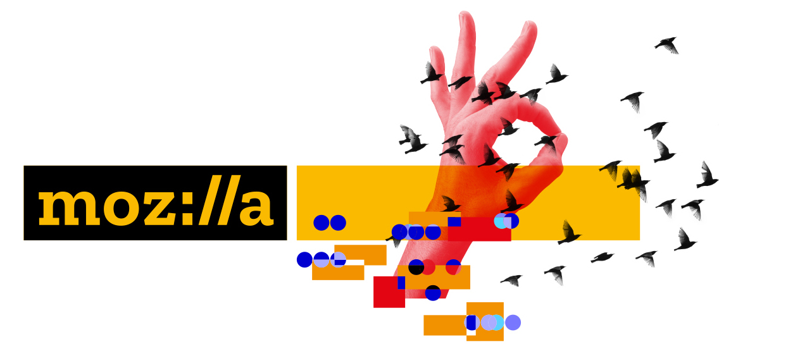

If you are a user of margaritashotgun you likely love the support that it provides for acquiring live memory via ssh. This supports acquisition to your forensics workstation or Amazon’s S3 service.
Last fall at BSides PDX 2016 we launched a new feature for margaritashotgun.
This introduced a repository of signed kernel modules for automatic use during memory acquisition. To keep up with kernel releases that service needs to run at least once a day. This is made possible by our lime-compiler rubygem. The lime-compiler gem solves the problem of spinning up docker containers, pulling down all the necessary kernel modules, and building each against the respective headers.
Well the list of modules that we build is controlled by a .yml file here: https://github.com/ThreatResponse/lime-compiler/blob/master/conf/config.yml
Note: If we don’t support your OS / Kernel combination we accept pull requests.
@andrewkrug joined Mozilla in February of 2017 since then Mozilla has agreed to host the lime-compiler service and run module builds ever 4 hours. What does this mean for you? No more waiting on us to support new kernel versions especially in Amazon Linux!
Special thanks to InfoSec Teams at Mozilla and @0x7eff ( Jeff Bryner ) for supporting the module builds.